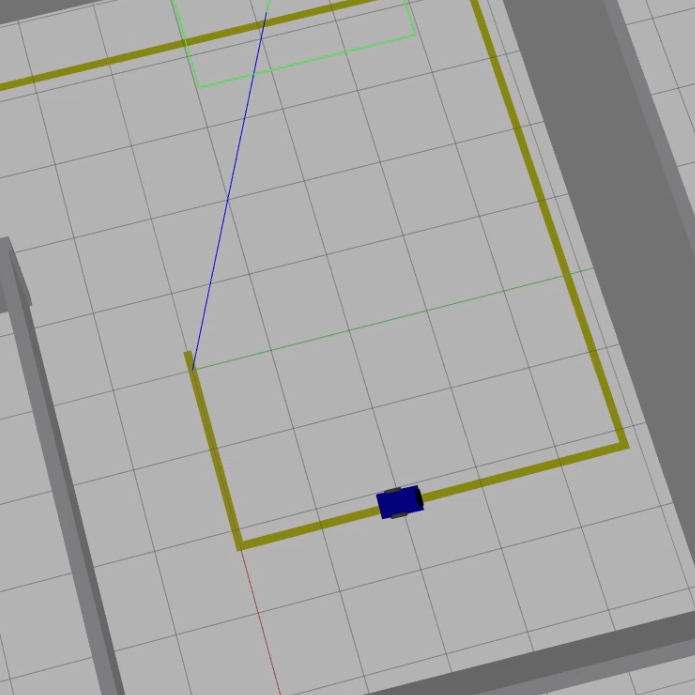
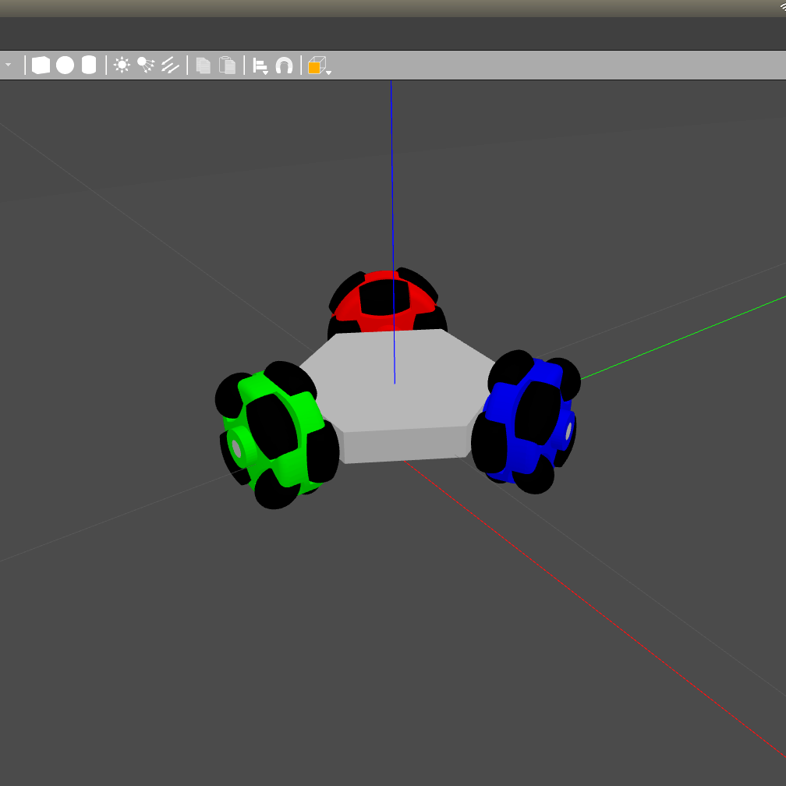
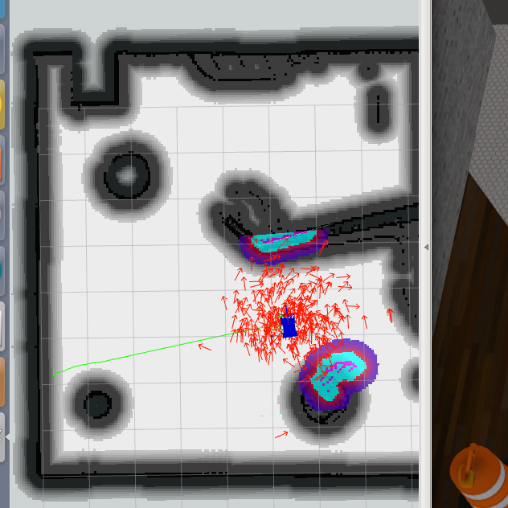
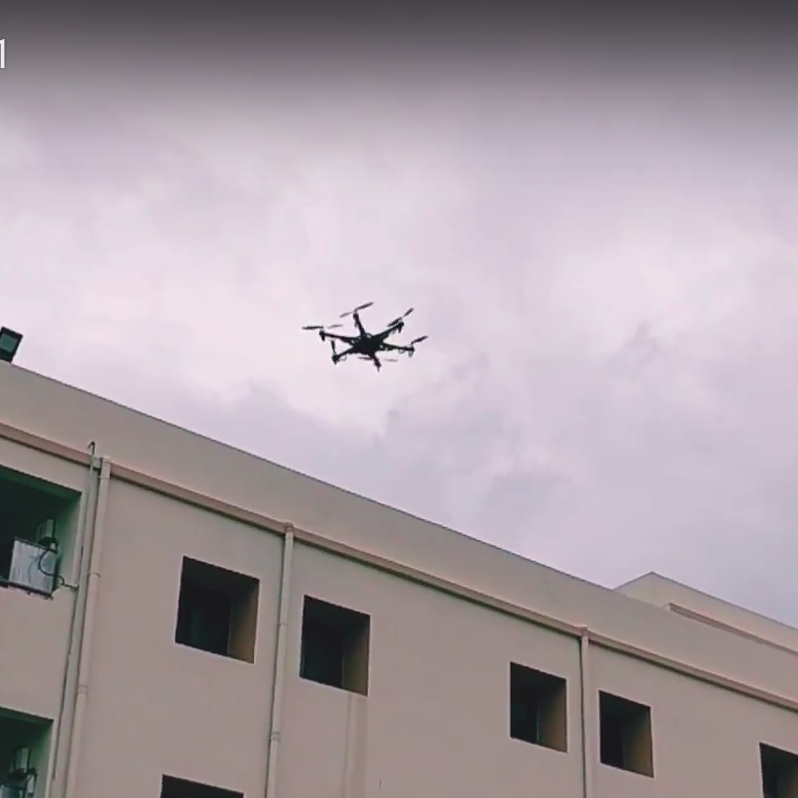
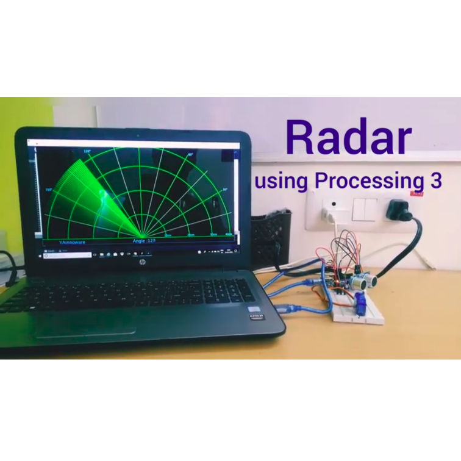
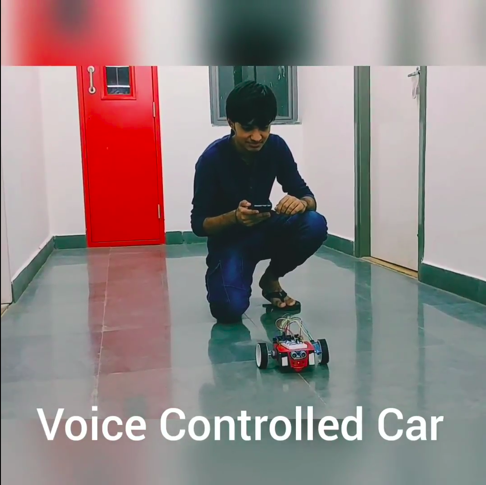
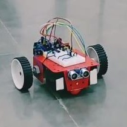
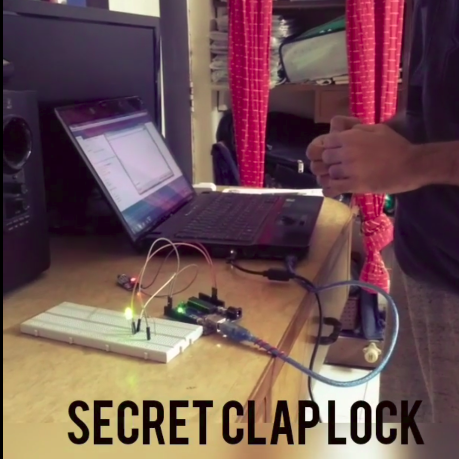
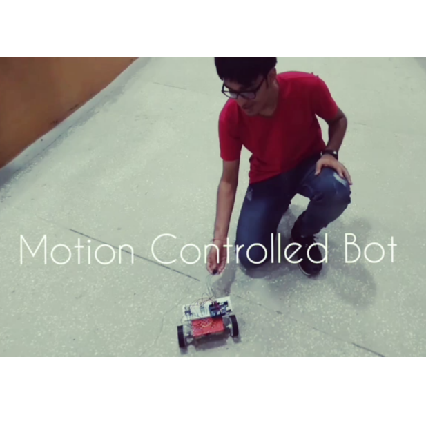
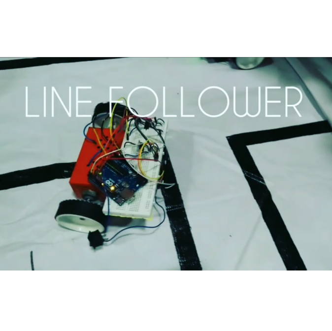

line_maze_ros
August 2019
A ROS package for solving line mazes using OpenCV. Implemented multiple centroid tracking algorithm to follow lines and used the left-hand rule to solve the maze. The results of the algorithm were verified using Gazebo simulations.

teleop_keyboard_omni3
March 2019
A Generic keyboard teleop for three-wheeled omnidirectional robots. Performed motion analysis of three-wheeled robots and extended the results to develop the control algorithm. This package has been added to ROS package index. The code was initially tested on a Gazebo simulation and then extended to an actual robot.

navros_pkg
February 2019
A ROS package for autonomous navigation of differential drive robots. Implemented ROS Navigation stack on a Gazebo simulation of a differential driven car. SLAM algorithm is used for mapping and creating local and gloabal cost maps. Used Dijkstra's algorithm for path planning and the robot localization is carried out using Monte Carlo localization algorithm.

Hexacopter
August 2018
A six rotor drone built using the APM Flight controller. This project was funded under Student's Union Technical Challenge 2018.

Humanoid Robot
May 2018
It is a 8 DOF biped robot capable of walking autonomously like Humans. Based on Arduino, this robot consists of legs made up of servo motors which rotate simultaneously to create human-like walking. Designed the robot on Solidworks and wrote the walking algorithm.

Radar using Processing 3
March 2018
A constantly moving scanner which measures the distance from the surroundings and shows it on screen using Processing 3 software. It is a object detection system that uses ultrasonic sensor to determine the distance.

Voice Controlled Car
February 2018
Most viewed project with 24k+ views on Arudino.cc. A robot which can be controlled using specific voice commands. Speech to Text functionality is used to convert voice commands to text that are then sent to Arduino through Bluetooth communication.

Mobile Controlled Car
February 2018
A robot which can be controlled by a mobile phone using an android application. The communication of mobile phone and Arduino is achieved with the use of Bluetooth. The robot can be controlled using a joystick or by tilt movements of the phone.

Secret clap door lock
December 2017
A door lock which opens only when a particular pattern of claps are detected. An Arduino based system is created which hears the pattern of claps and compares it with the saved pattern. If both matches, the lock opens.

Gesture Controlled Robot
September 2017
Based on Arduino, it is an automated robot which is controlled by human hand gestures. Tilt of the hand actually determines the direction of the movement of the robot.

Line Follower
September 2017
An autonomous mobile robot created using Arduino, that can detect and follow the line drawn on the floor followed by a feedback mechanism. Generally, the path is predefined and can be visible as a black line on a white surface.
